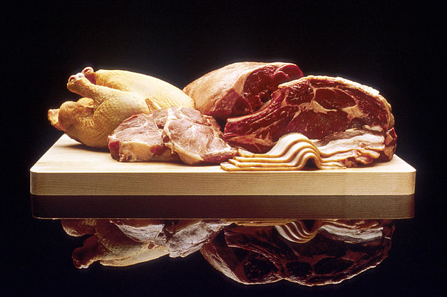

Meat is animal flesh that is eaten as food.
/Humans have hunted and killed animals for meat since prehistoric times. The advent of civilization allowed the domestication of animals such as chickens, sheep, rabbits, pigs and cattle. This eventually led to their use in meat production on an industrial scale with the aid of slaughterhouses.